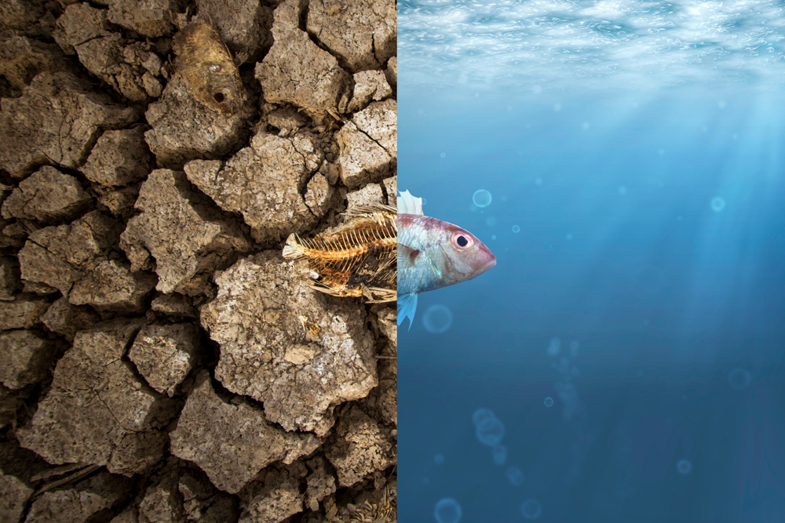

Notícias e Atualizações
Janeiro de 2025: o mês mais quente da história
O mês de janeiro de 2025 foi o mais quente já registrado, com temperaturas médias 1,75°C acima dos níveis do final do século XIX. Esse aumento intensifica a frequência e a severidade de eventos climáticos extremos, como ondas de calor e enchentes.
Enchentes no Rio Grande do Sul: um ano depois
Em 2024, o Rio Grande do Sul enfrentou enchentes históricas, com águas ultrapassando 1,5 metro de altura no centro de Porto Alegre, superando a enchente de 1941.
Um ano após o desastre, o estado ainda enfrenta desafios significativos:

- Monitoramento e alertas climáticos ainda são deficientes, com especialistas apontando que o estado não está preparado para novos eventos extremos.
- Investimentos na reconstrução já somam quase R$ 7 bilhões, incluindo a instalação de um radar meteorológico em Porto Alegre.
- Atualizações sobre desaparecidos continuam, com a Defesa Civil divulgando recentemente informações sobre pessoas afetadas pelas enchentes de 2024.
Brasil se prepara para sediar a COP30
O Brasil sediará a COP30 em Belém do Pará, em novembro de 2025. O país apresentou um plano climático ambicioso, comprometendo-se a reduzir as emissões de gases de efeito estufa em até 67% até 2035, em comparação com os níveis de 2005.
Crise climática ameaça ecossistemas
Especialistas alertam que, se as ações atuais forem mantidas, o aumento da temperatura global pode chegar a 2,7°C até 2100, provocando uma nova extinção em massa de espécies
Ações de Solidariedade e Recuperação
Apesar da tragédia, o espírito de solidariedade brilhou:
- Milhares de voluntários se mobilizaram para abrigar, alimentar e apoiar as vítimas.
- ONGs ambientais lançaram campanhas de reflorestamento e reconstrução sustentável.
- Projetos de infraestrutura verde estão sendo debatidos para prevenir futuras catástrofes.
"O que aconteceu no Rio Grande do Sul é um alerta para todo o país. A crise climática já chegou, e precisamos agir."
-Instituto Brasileiro de Mudanças Climáticas
Histórias de Esperança e Ação
Enquanto enfrentamos os impactos da crise, também celebramos quem está fazendo a diferença:
- Nova lei de proteção de manguezais é aprovada no Congresso.
- Cidades brasileiras aumentam investimentos em ciclovias sustentáveis.
- Comunidades quilombolas lideram projetos de reflorestamento no interior do Pará.

Nossa missão é informar, alertar e inspirar. A crise climática é dinâmica — e o conhecimento é a melhor ferramenta para enfrentar essa emergência.